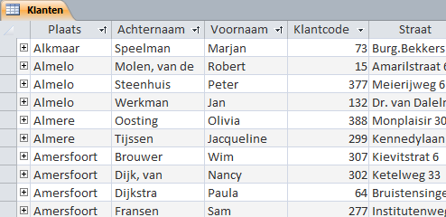

Records oplopend of aflopend sorteren op één of meerdere velden.
Je kunt de records in een tabel sorteren op basis van de waarden in een of meerdere
velden. Het sorteren kan zowel in oplopende als aflopende volgorde.
In de volgende oefening moet de tabel Klanten gewijzigd worden
zodat een overzicht ontstaat van eerst de plaats, dan de achternaam en dan de
voornaam. De records moeten ook in deze volgorde gesorteerd worden.Figuur 1: Tabel Klanten gesorteerd op plaats, achternaam en voornaam

Open de database snoep2016.accdb.
Open de tabel Klanten.
De tabel Klanten wordt in de Gegevensbladweergave geopend.
Selecteer de kolom Plaats via een klik op de kop van de
kolom.
Sleep de kolom Plaats naar links zodat dit de eerste kolom
in de tabel wordt.
Verplaats op dezelfde manier de kolommen Achternaam en
Voornaam naar respectievelijk de 2e en 3e positie in de
tabel.
Sortering op één veld.
Klik in de kolom Plaats op het pijltje aan de rechterkant
van de kolomkop en kies uit het snelmenu voor Sorteren van A naar
Z.
Access reorganiseert de records in alfabetische volgorde op plaatsnaam
en toont een klein naar boven wijzend pijltje () aan de rechterkant van de kolomkop om
de sorteervolgorde aan te geven.
Hef de sortering op via tab Start > Sorteeracties verwijderen (groep Sorteren en
filteren).
Sortering op meerdere velden.
Selecteer de kolommen Plaats, Achternaam
en Voornaam.
Kies tab Start > Oplopend (groep Sorteren
en filteren).
Access reorganiseert nu de records in oplopende alfabetische volgorde
eerst op plaatsnaam, dan op achternaam en dan op voornaam. Aan de rechterkant
van elk van deze drie kolomkoppen is nu het kleine naar boven wijzende pijltje
te zien.
Sluit de tabel Klanten en kies bij de vraag om de
wijzigingen op te slaan voor Nee.

 ) aan de rechterkant van de kolomkop om
de sorteervolgorde aan te geven.
) aan de rechterkant van de kolomkop om
de sorteervolgorde aan te geven. (groep Sorteren
en filteren).
Access reorganiseert nu de records in oplopende alfabetische volgorde eerst op plaatsnaam, dan op achternaam en dan op voornaam. Aan de rechterkant van elk van deze drie kolomkoppen is nu het kleine naar boven wijzende pijltje te zien.
(groep Sorteren
en filteren).
Access reorganiseert nu de records in oplopende alfabetische volgorde eerst op plaatsnaam, dan op achternaam en dan op voornaam. Aan de rechterkant van elk van deze drie kolomkoppen is nu het kleine naar boven wijzende pijltje te zien.